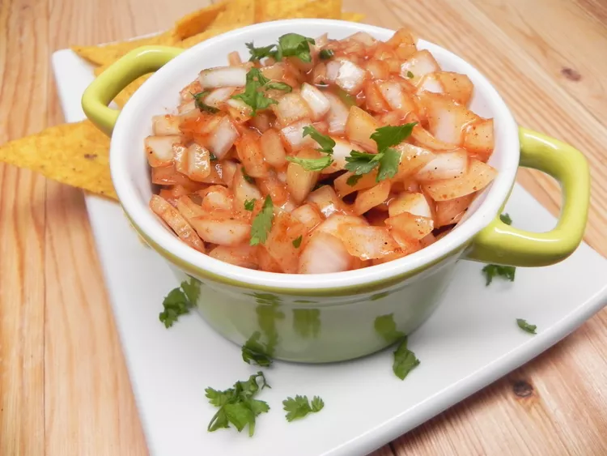

Go To Home Page
Indian Spiced Onions

Spiced Onions With Papad
Spicy onions just like the ones served in Indian restaurants as a side dish! Delicious served with crispy papadums as a starter for any Indian meal.
Ingredients
- 1 onion, chopped
- 2 teaspoons ketchup
- 1 teaspoon lemon juice
- 1 tablespoon white sugar
- 1 teaspoon chopped fresh cilantro
- 1 teaspoon chopped fresh fenugreek leaves
- 1 teaspoon chili powder
- 1 pinch salt
Steps
- Stir together onion and ketchup in a medium bowl until onion is thinly and evenly coated. Mix in lemon juice.
- Stir in sugar, cilantro, fenugreek, chili powder, and salt until well combined.
- Cover and chill in the refrigerator for 24 hours to let the lemon juice neutralize the onion flavor slightly.
Don't forget to try this with papadums. Enjoy eating :)